ตัดง่าย
โหมดเต็ม · 8 แท็บ
✓ใส่วิดีโอ
✓เลือกสไตล์
✓ตัดให้เลย
✓เลือกแบบ
5แต่งหนัง
ทำขั้น ⑤ ใหม่ · ~45 วิ
B · ย่อ 45 วิ ตามกฎ
44.2 วิ · 6 ช็อต
ชั้นในแบบนี้ — กดเพื่อแก้
ข้อความHOOK · การ์ดปิด
เพลง · 2 แทร็กอัปบีต · SFX 0
สติกเกอร์ / ภาพซ้อน1 · ใหม่
ซับจากบทพูด12 บรรทัด · 2 ไม่มั่นใจ
โทนสี / ซูม / ความเร็วpunch · zoom 3 ช็อต
วางสติกเกอร์ให้ 3–5 จุด~1 นาที
วางเสียงเอฟเฟกต์ตรงรอยตัด~1 นาที
AI เสนอเป็นรายการ คุณกดรับทีละข้อเหมือนหน้า ④
ขั้น ⑤ เข้ารหัสใหม่ทั้งเรื่อง~45 วิ
ขั้น ③ ไม่ถูกแตะcache

น้ำตกที่ไกล
ยังไม่ไกลเท่า
บันไดที่ต้องเจอ

สติกเกอร์ · ลากเพื่อย้าย · 0.0–44.2 วิ
00:00:01:12
/ 00:00:44:06
แถบเวลาย่อ — ลากขอบเพื่อปรับช่วง · แก้ละเอียดในโหมดเต็ม
สติกเกอร์ / ภาพซ้อน
คลัง 200 แบบ
อัปโหลดของฉัน
มาสคอต
ป้าย / แบดจ์บับเบิลลูกศรกรอบรีแอ็กชันอารมณ์โซเชียลเดินทางตัวเลข+3
4K แบนเนอร์
แบนเนอร์ กระดิ่ง
กระดิ่ง ลูกโป่ง
ลูกโป่งBEST

ลูกศรโค้งรองเท้าบูต
เป้
ทุกแบบมี "ท่า" มาให้ — แบดจ์เกาะมุมขวาบน · แถบนอนล่างซ้าย วางแล้วใช้ได้เลย
วางที่
ทั้งเรื่องช็อตแรกช็อตสุดท้ายช็อตที่ดูอยู่
20
100
slide ▾
อัปโหลดของตัวเอง
PNG · WEBP · JPG · วิดีโอพื้นโปร่ง MOV (ProRes 4444) ≤ 40 MB — .webm อัลฟาใช้ไม่ได้ · เข้าคลังของโปรเจกต์ (.vcut/assets)
ไม่มีแอนิเมชันเด้ง (pop) กับภาพซ้อน — ย่อ-ขยายทุกเฟรมช้าลง 3 เท่า ใช้ slide/rise/fade แทน